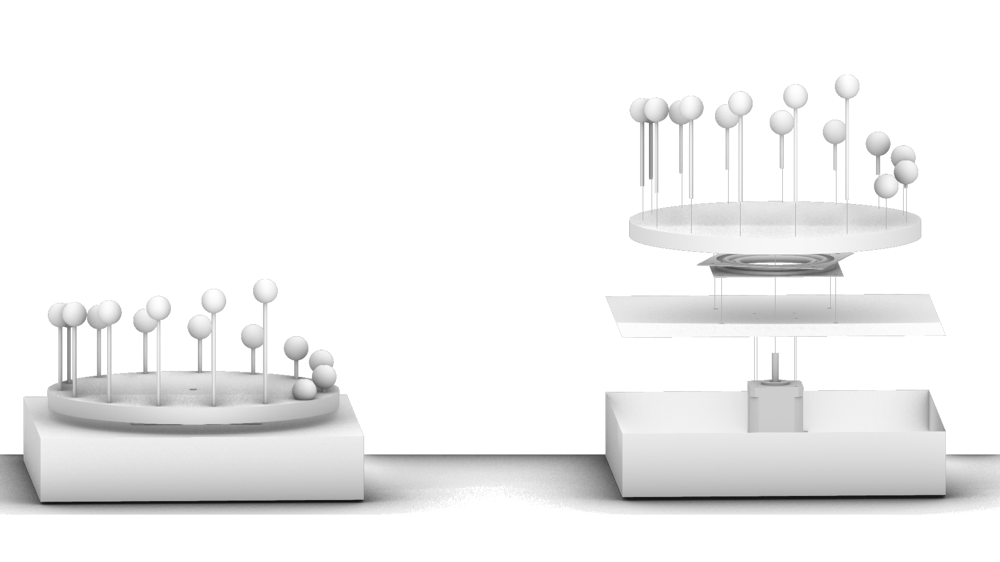

<div class="textcontainer">
<p class="margin"> </p>
<h4>Assignment: Minimum Viable Product for Final Project</h4>
I had grand plans for my MVP this week. I figured that since I had already made a [kinetic spinning sculpture](https://bkazer.github.io/PS70/03_fabrication/index.html), programmed a [stepper
motor to coordinate with a flashing LED](https://bkazer.github.io/PS70/04_microcontroller/index.html), and programmed a [sliding potentiometer to control RGB LED values](https://bkazer.github.io/PS70/06_inputs/index.html), I could essentially combine all previously completed steps into a pretty substantial model of my final project. My goal was to create a crude zoetrope that integrated these components, included some basic 3D printed geometry for the animation test, and possibly upgrade the RGB LED to an array of LED strips
to do a real, practical test of the strobe effect.
<p class="margin"> </p>
Since I was traveling out of state for all of spring break, I unfortunately couldn't be in the lab building, but I spent some time putting
together a 3D model of what I wanted my prototype to look like. Taking guidance from one of the reference projects in [Making Things Move](chrome-extension://efaidnbmnnnibpcajpcglclefindmkaj/https://mars1980.github.io/resources/making_things_move.pdf), I planned to use lazy susan hardware to offer some load bearing support for the spinning plate, as opposed to just spinning
around the motor shaft as I did for my kinetic sculpture. I donwloaded 3D models of both the hardware and the stepper motor I am using from GrabCad and included those in my model.
<p class="margin"> </p>
<div class="flexrow">

</div>
<p class="caption">a 3D model of my planned MVP
</p>
After break, I hit the ground running with lots of optimism. I wanted to use plywood for this model instead of cardboard for a more structural material, and to test the capacity of the
stepper motor to spin a heavier, larger material, including the hardware. I picked up the lazy susan hardware, lasercut the base plate and a 12" spinning top according to my drawing, and began assembling. Things fit together nicely, aside from poor tolerance on the shape that was intended to couple to motor shaft to the spinning plate/hardware. Should be no big deal to fix,
right?
<p class="margin"> </p>
<div class="flexrow">
</div>
<p class="caption">Assembling base, hardware, and spinning plate with a bad connection to the motor shaft</p>
WRONG! Here begins my painful journey of learning how to properly design a motor coupler. After carefully measuring the dimensions of the motor shaft, it took 6 tries (over the course of 2 days) with adjusting tolerances (all within 1 mm) and designs to 3D print a coupler that was even moderately functional. Even after finding the correct tolerance, I failed a few times trying
to use set screws. Self threading the PLA with a screw eventually stripped, and heat set brass insert smushed the part too much. I then printed a larger coupler component that included a fix plate for the wood top to screw through and into the hardware, but the torque from the motor snapped the small coupler piece off.
<p class="margin"> </p>
<div class="flexrow">
<img src="failures.jpg" alt="failed 3d printed parts"style="width:100%; max-width:600px;">
</div>
<p class="caption">a succession of failed coupler prints/trials
</p>
After much frustration, I finally found a solution that worked decently, colored in green in the image below.
<p class="margin"> </p>
<div class="flexrow">
</div>
<p class="caption">Attempts at designing a coupler for the stepper motor shaft, with the "working" selection in green
</p>
I took the spinning wood top to the bandsaw and adjusted the center cutout to fit the new coupler. At this point, and at the 11th hour, I hit more problems. For whatever reason, when the screws connecting the top plate to the lazy susan hardware were properly tightened, it impeded the spinning. At the moment, I have no idea why. There is nothing interfering with the mechanism at all, and when I loosen them just so, it spins fine. I have to work on this. Just to illustrate the concept, I connected the arduino, motor, and an LED to show that I can spin a plate with my syncopated LED flashing.
<p class="margin"> </p>
<div class="flexrow">
</div>
<p class="caption">Finally getting things to spin
</p>
Admittedly, this was a dissapointing week for me, as I only achieved about 1/3 of what I intended to. I need to seriously work on the following: <br>
1. Figure out why the tight screws mess with the lazy susan hardware <br>
2. Get started on wiring up LED strips to experiment with brightness, and how to mount the strips to a structure above the spinning plate <br>
3. Start working on the geometry to animate, which may include learning blender software <br>
4. Test the strobe rate to properly callibrate the effect and assess the impact of lighting conditions.<br>
5. Finally, start thinking about details like the enclosure for the base that allows access to controls, e.g. sliding potentiometer.
</div>